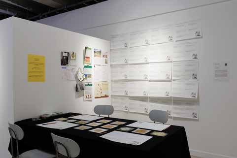
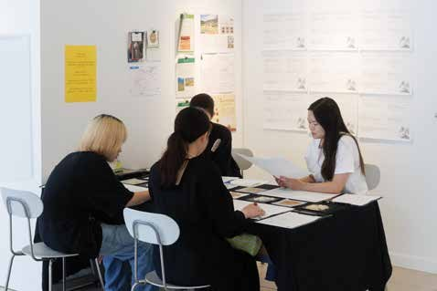
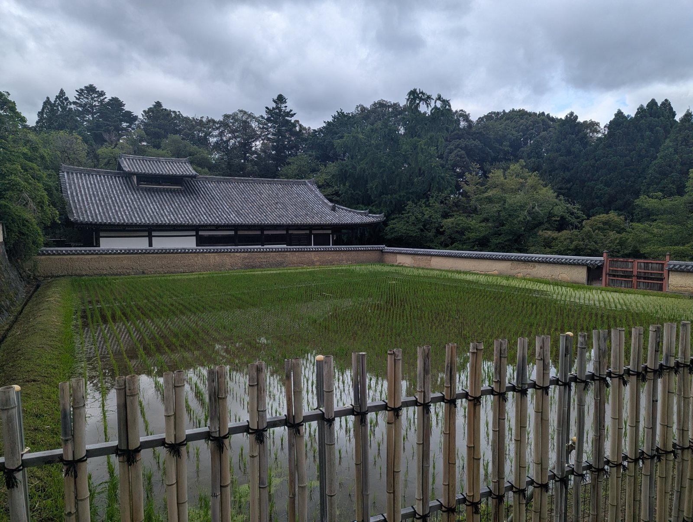
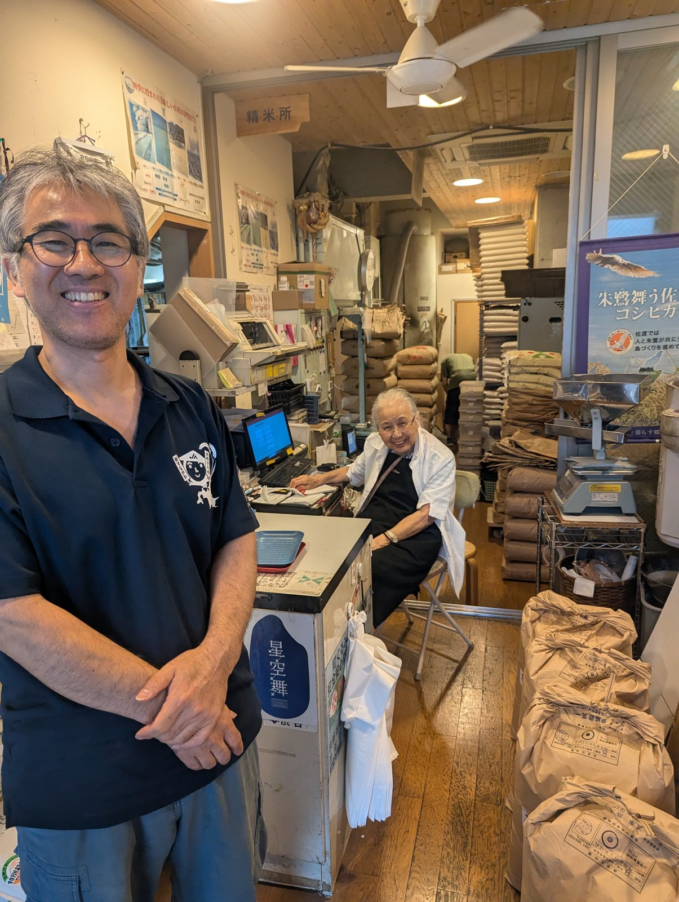
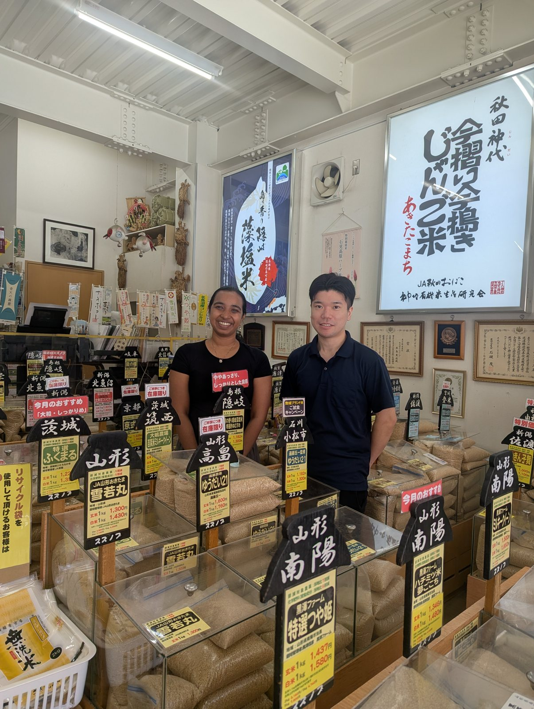
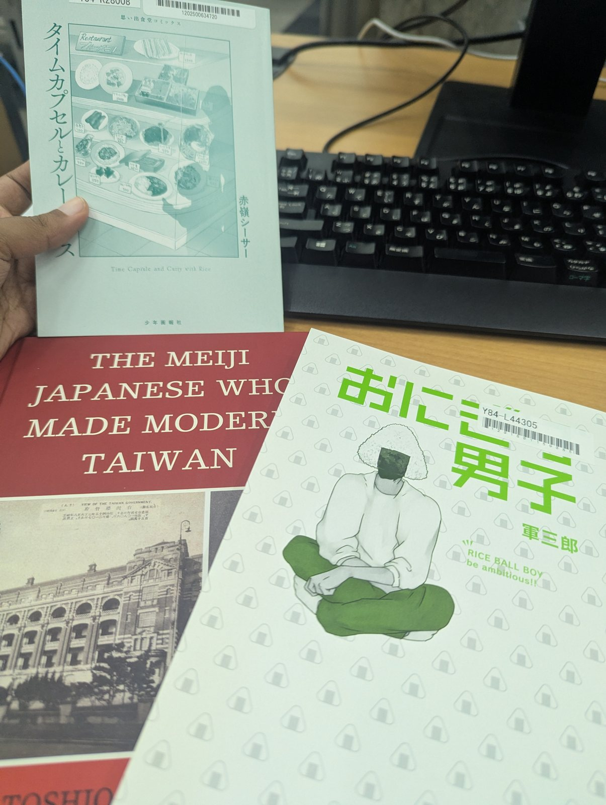
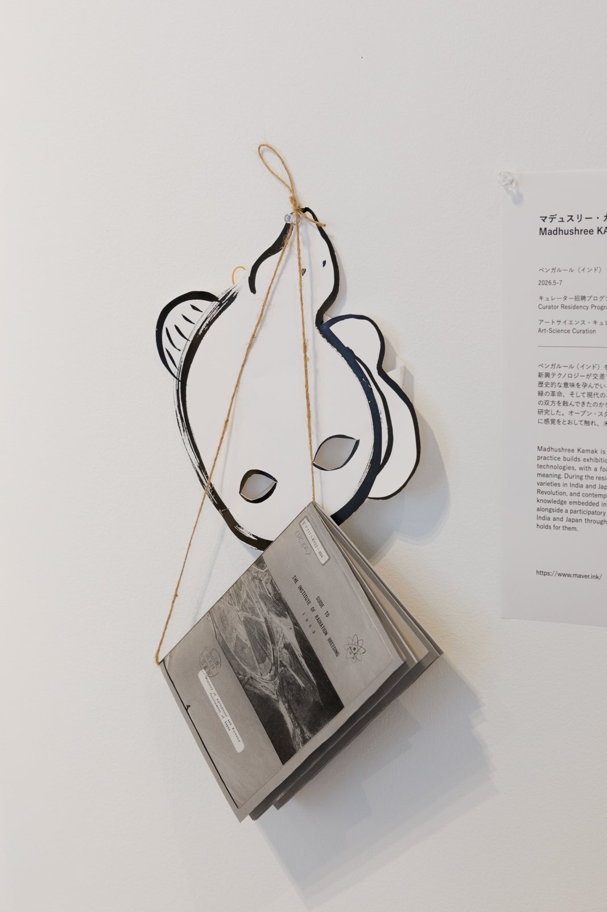
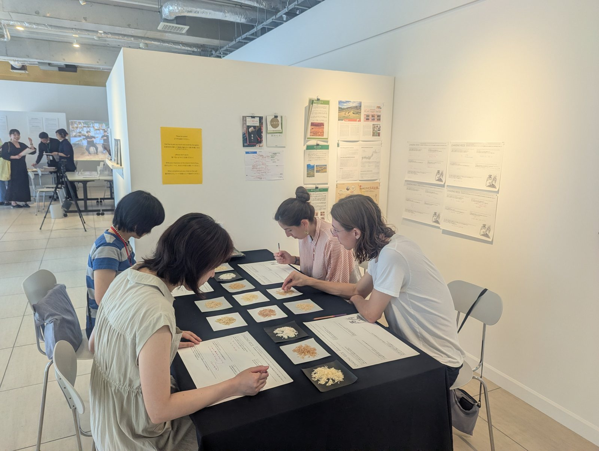
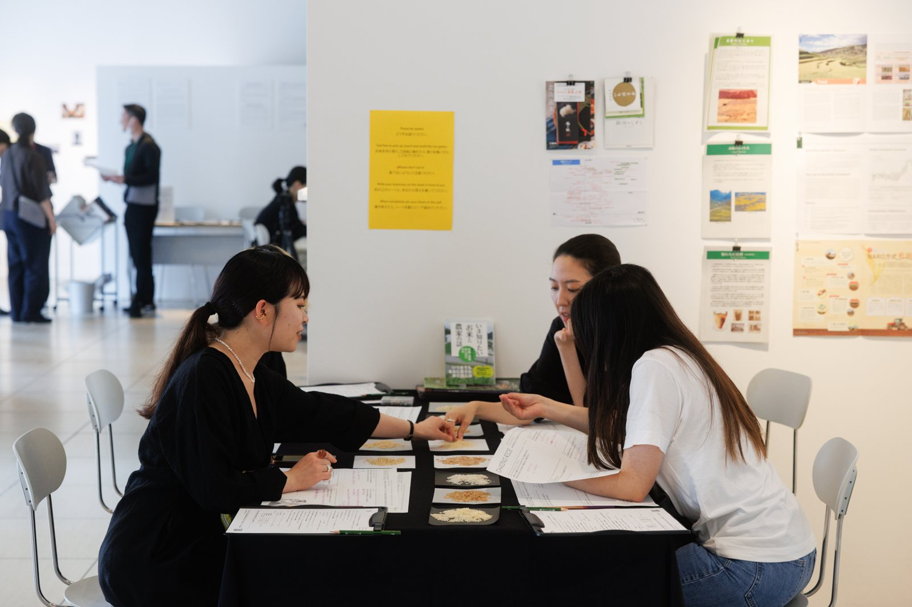
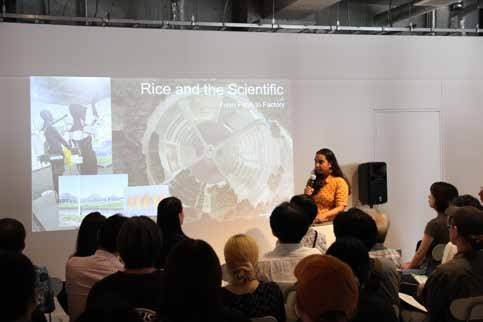

Open Studio, TOKAS 2026
- ROLE
- Curator in Residence
- HOST
- Tokyo Arts and Space (TOKAS)
- PRESENTED
- Open Studio, 19 July 2026
- PLACES
- Tokyo · Kyoto · Tsukuba · Mishima · Nara
A curatorial research project on food cultures and biotechnology, told through a single grain. Moving between archaeological sites, Shinto shrines, agricultural research institutes, rice stores and sake breweries across Japan, it traces how rice has shaped, and been shaped by, civilisation, belief, science and politics.


Layered meanings
In Japan, rice is the food of the gods, offered at shrines like Fushimi Inari. It is a scientific object, bred and irradiated at sites like the Gamma Garden in Hitachiōmiya. It has served as an instrument of colonial agriculture and as a symbol of national identity, from Iso Eikichi's breeding programmes in Taiwan to the humble Hinomaru bento. The research also asks whether there is a more-than-human approach to rice.
A table of nine grains
At the Open Studio, visitors sat down with nine unmilled varieties and a bilingual English–Japanese dining mat that asked about first rice memories, family dishes at risk of being forgotten, and what is lost when a variety quietly disappears. Their written and drawn responses form an archive of embodied rice knowledge that science and archives can't recover.
- Hoshihikari · Shinosuke · Yumepirika · Ryuno HitomiJP
- Thanjavur Ponni · Rajmudi · Basmati · Brown Kajaya · Red riceIN
FIELD RESEARCH








Curator's talk, TOKAS 2026
IN CONVERSATION WITH
National Institute of Genetics, Mishima · NARO, Tsukuba · Kyoto University · Soken University · Tokyo University of Agriculture · Koike Rice Store · Suzunobu Rice Project · Bakudapan Food Studies Group · BioClub Tokyo · YCAM · NTT ICC
RESIDENCY SUPPORTED BY